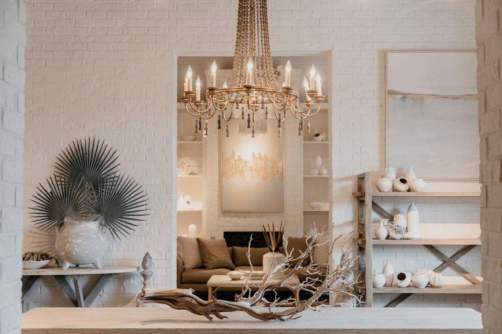
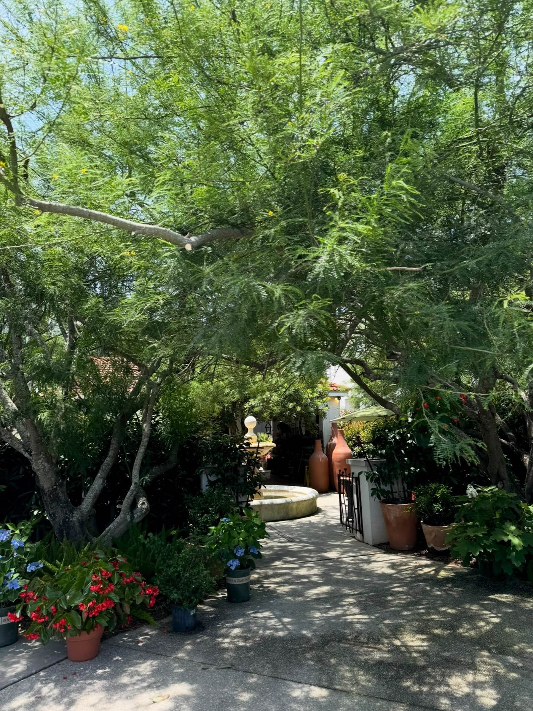
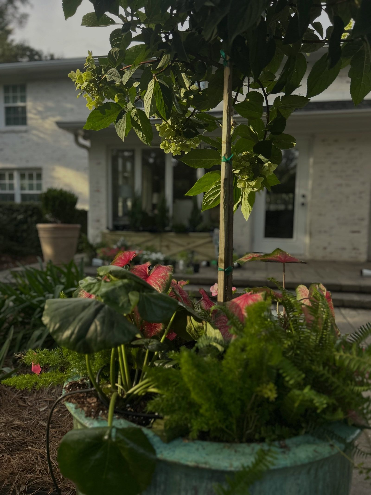
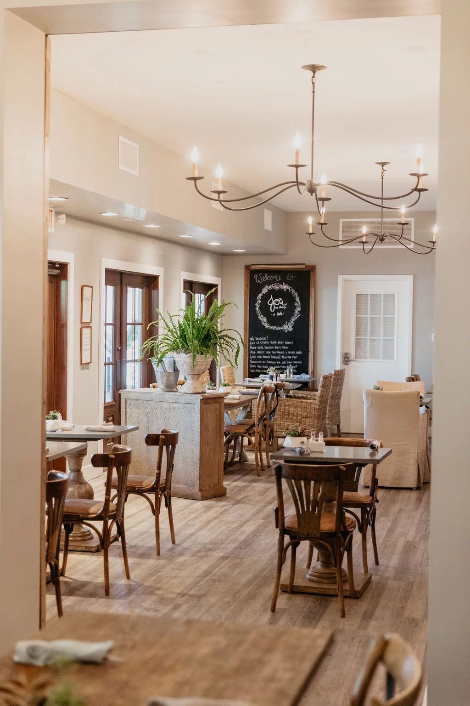

A store to wander
Eclectic rooms, gathered slowly, in the middle of downtown.
Duh for Garden and Home is a multi-building store and garden compound on North 9th Avenue in Pensacola. The shelves mix furniture, home accessories, and found objects from different cultures and eras, with an emphasis on texture, pattern, and natural materials.
The result is what the store calls a comfortable, relaxed style with an elegant presence.
Inside the Store
Rooms full of things with a past.
Furniture and home goods sit next to clothing, jewelry, and books, so a trip through the store covers a lot of ground. Inventory changes as new pieces arrive, so the showroom floor keeps shifting.
Furniture
Eclectic pieces for living rooms, bedrooms, and dining rooms, including imports and one of a kind finds.
Home Accessories
Rugs, lighting, art, bedding, and objects chosen for texture and pattern.
Clothing and Jewelry
Men's and women's clothing, jewelry, and accessories.
Books and Gifts
Books, candles, and gifts for the house, arranged through the store alongside the furniture.
Interior Design Staff
The store's design staff can help pull a room together. Ask in the store to make an appointment.
Pickup and Delivery
Curbside pickup and delivery are available. Call the store for details on your order.
The Garden
Step outside into the garden compound.
Past the showrooms, the garden side of Duh holds orchids, ferns, and succulents, plus outdoor furniture, pottery, and hammocks. Paths run between planted beds and potted displays, with room to sit and look around.
It is a working garden center as much as a display: plants are sold alongside the pots and outdoor pieces that go with them.



On Site Dining
Jo's Cafe, as always.
Jo's garden cafe sits inside the store, with lunch served Monday through Saturday from 10:30 a.m. to 2:30 p.m. The menu includes traditional recipes alongside newer items, and reviewers have singled out the chicken salad and the gumbo.
Jo's is closed on Sunday, along with the rest of the store.
Call the Store: (850) 439-0640Visit
Find the store.
Address
501 N 9th Ave
Pensacola, FL 32501
Store Hours
Monday to Friday: 9:00 a.m. to 5:00 p.m.
Saturday: 10:00 a.m. to 5:00 p.m.
Sunday: closed
Jo's cafe lunch: Monday to Saturday, 10:30 a.m. to 2:30 p.m.
Contact
Phone: (850) 439-0640
Instagram: @duhpensacola (profile link not verified, so no link is shown here)